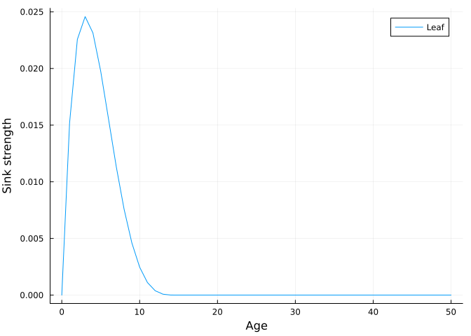
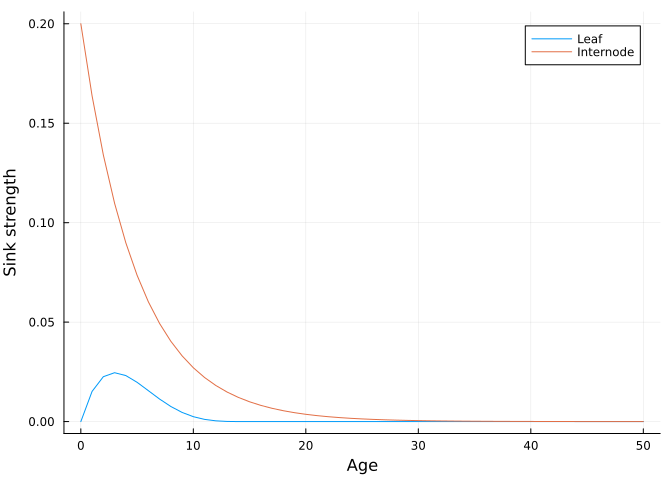
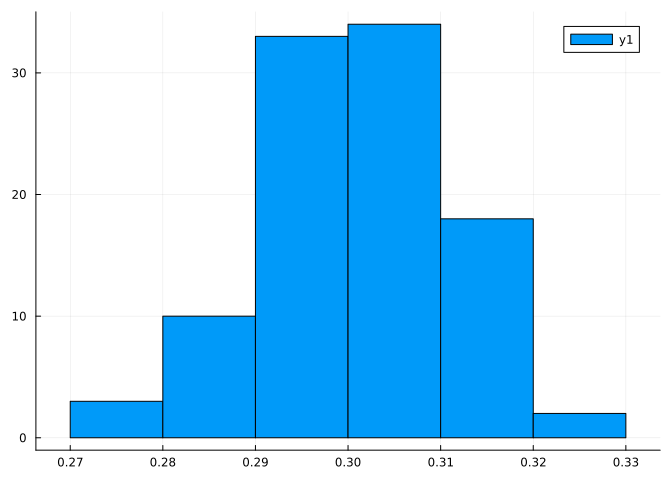
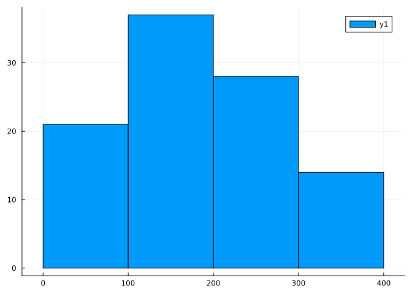
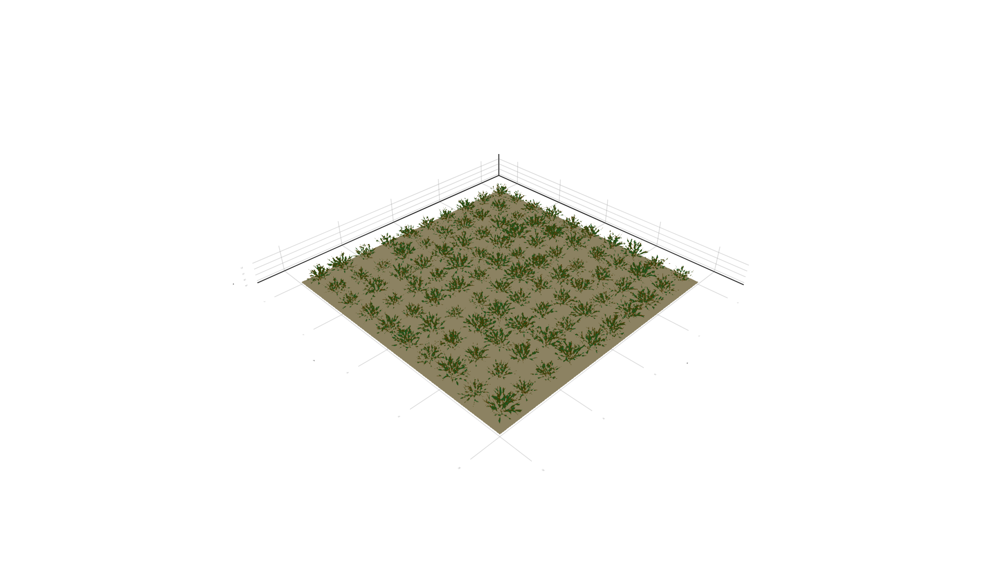

using VPL
using Base.Threads: @threads
using Plots
import Random
using FastGaussQuadrature
using Distributions
Random.seed!(123456789)Random.TaskLocalRNG()In this example we extend the forest example to have more complex, time- depedent development and growth based on carbon allocation. For simplicity, the model assumes a constant relative growth rate at the plant level to compute the biomass increment. In the next example this assumption is relaxed by a model of radiation use efficiency. When modelling growth from carbon allocation, the biomass of each organ is then translated in to an area or volume and the dimensions of the organs are updated accordingly (assuming a particular shape).
The following packages are needed:
using VPL
using Base.Threads: @threads
using Plots
import Random
using FastGaussQuadrature
using Distributions
Random.seed!(123456789)Random.TaskLocalRNG()The data types needed to simulate the trees are given in the following module. The differences with respect to the previous example are:
- Meristems do not produce phytomers every day
- A relative sink strength approach is used to allocate biomass to organs
- The geometry of the organs is updated based on the new biomass
- Bud break probability is a function of distance to apical meristem# Data types
module TreeTypes
using VPL
using Distributions
# Meristem
Base.@kwdef mutable struct Meristem <: VPL.Node
age::Int64 = 0 # Age of the meristem
end
# Bud
struct Bud <: VPL.Node end
# Node
struct Node <: VPL.Node end
# BudNode
struct BudNode <: VPL.Node end
# Internode (needs to be mutable to allow for changes over time)
Base.@kwdef mutable struct Internode <: VPL.Node
age::Int64 = 0 # Age of the internode
biomass::Float64 = 0.0 # Initial biomass
length::Float64 = 0.0 # Internodes
width::Float64 = 0.0 # Internodes
sink::Exponential{Float64} = Exponential(5)
end
# Leaf
Base.@kwdef mutable struct Leaf <: VPL.Node
age::Int64 = 0 # Age of the leaf
biomass::Float64 = 0.0 # Initial biomass
length::Float64 = 0.0 # Leaves
width::Float64 = 0.0 # Leaves
sink::Beta{Float64} = Beta(2,5)
end
# Graph-level variables -> mutable because we need to modify them during growth
Base.@kwdef mutable struct treeparams
# Variables
biomass::Float64 = 2e-3 # Current total biomass (g)
# Parameters
RGR::Float64 = 1.0 # Relative growth rate (1/d)
IB0::Float64 = 1e-3 # Initial biomass of an internode (g)
SIW::Float64 = 0.1e6 # Specific internode weight (g/m3)
IS::Float64 = 15.0 # Internode shape parameter (length/width)
LB0::Float64 = 1e-3 # Initial biomass of a leaf
SLW::Float64 = 100.0 # Specific leaf weight (g/m2)
LS::Float64 = 3.0 # Leaf shape parameter (length/width)
budbreak::Float64 = 1/0.5 # Bud break probability coefficient (in 1/m)
plastochron::Int64 = 5 # Number of days between phytomer production
leaf_expansion::Float64 = 15.0 # Number of days that a leaf expands
phyllotaxis::Float64 = 140.0
leaf_angle::Float64 = 30.0
branch_angle::Float64 = 45.0
end
end
import .TreeTypesThe methods for creating the geometry and color of the tree are the same as in the previous example.
# Create geometry + color for the internodes
function VPL.feed!(turtle::Turtle, i::TreeTypes.Internode, vars)
# Rotate turtle around the head to implement elliptical phyllotaxis
rh!(turtle, vars.phyllotaxis)
HollowCylinder!(turtle, length = i.length, height = i.width, width = i.width,
move = true, color = RGB(0.5,0.4,0.0))
return nothing
end
# Create geometry + color for the leaves
function VPL.feed!(turtle::Turtle, l::TreeTypes.Leaf, vars)
# Rotate turtle around the arm for insertion angle
ra!(turtle, -vars.leaf_angle)
# Generate the leaf
Ellipse!(turtle, length = l.length, width = l.width, move = false,
color = RGB(0.2,0.6,0.2))
# Rotate turtle back to original direction
ra!(turtle, vars.leaf_angle)
return nothing
end
# Insertion angle for the bud nodes
function VPL.feed!(turtle::Turtle, b::TreeTypes.BudNode, vars)
# Rotate turtle around the arm for insertion angle
ra!(turtle, -vars.branch_angle)
endThe meristem rule is now parameterized by the initial states of the leaves and internodes and will only be triggered every X days where X is the plastochron.
# Create right side of the growth rule (parameterized by the initial states
# of the leaves and internodes)
function create_meristem_rule(vleaf, vint)
meristem_rule = Rule(TreeTypes.Meristem,
lhs = mer -> mod(data(mer).age, vars(mer).plastochron) == 0,
rhs = mer -> TreeTypes.Node() +
(TreeTypes.Bud(),
TreeTypes.Leaf(biomass = vleaf.biomass,
length = vleaf.length,
width = vleaf.width)) +
TreeTypes.Internode(biomass = vint.biomass,
length = vint.length,
width = vint.width) +
TreeTypes.Meristem())
endcreate_meristem_rule (generic function with 1 method)The bud break probability is now a function of distance to the apical meristem rather than the number of internodes. An adhoc traversal is used to compute this length of the main branch a bud belongs to (ignoring the lateral branches).
# Compute the probability that a bud breaks as function of distance to the meristem
function prob_break(bud)
# We move to parent node in the branch where the bud was created
node = parent(bud)
# Extract the first internode
child = filter(x -> data(x) isa TreeTypes.Internode, children(node))[1]
data_child = data(child)
# We measure the length of the branch until we find the meristem
distance = 0.0
while !isa(data_child, TreeTypes.Meristem)
# If we encounter an internode, store the length and move to the next node
if data_child isa TreeTypes.Internode
distance += data_child.length
child = children(child)[1]
data_child = data(child)
# If we encounter a node, extract the next internode
elseif data_child isa TreeTypes.Node
child = filter(x -> data(x) isa TreeTypes.Internode, children(child))[1]
data_child = data(child)
else
error("Should be Internode, Node or Meristem")
end
end
# Compute the probability of bud break as function of distance and
# make stochastic decision
prob = min(1.0, distance*vars(bud).budbreak)
return rand() < prob
end
# Branch rule parameterized by initial states of internodes
function create_branch_rule(vint)
branch_rule = Rule(TreeTypes.Bud,
lhs = prob_break,
rhs = bud -> TreeTypes.BudNode() +
TreeTypes.Internode(biomass = vint.biomass,
length = vint.length,
width = vint.width) +
TreeTypes.Meristem())
endcreate_branch_rule (generic function with 1 method)We need some functions to compute the length and width of a leaf or internode from its biomass
function leaf_dims(biomass, vars)
leaf_biomass = biomass
leaf_area = biomass/vars.SLW
leaf_length = sqrt(leaf_area*4*vars.LS/pi)
leaf_width = leaf_length/vars.LS
return leaf_length, leaf_width
end
function int_dims(biomass, vars)
int_biomass = biomass
int_volume = biomass/vars.SIW
int_length = cbrt(int_volume*4*vars.IS^2/pi)
int_width = int_length/vars.IS
return int_length, int_width
endint_dims (generic function with 1 method)Each day, the total biomass of the tree is updated using a simple RGR formula and the increment of biomass is distributed across the organs proportionally to their relative sink strength (of leaves or internodes).
The sink strength of leaves is modelled with a beta distribution scaled to the leaf_expansion argument that determines the duration of leaf growth, whereas for the internodes it follows a negative exponential distribution. The pdf function computes the probability density of each distribution which is taken as proportional to the sink strength (the model is actually source-limited since we imposed a particular growth rate).
sink_strength(leaf, vars) = leaf.age > vars.leaf_expansion ? 0.0 :
pdf(leaf.sink, leaf.age/vars.leaf_expansion)/100.0
plot(0:1:50, x -> sink_strength(TreeTypes.Leaf(age = x), TreeTypes.treeparams()),
xlabel = "Age", ylabel = "Sink strength", label = "Leaf")
sink_strength(int) = pdf(int.sink, int.age)
plot!(0:1:50, x -> sink_strength(TreeTypes.Internode(age = x)), label = "Internode")
Now we need a function that updates the biomass of the tree, allocates it to the different organs and updates the dimensions of said organs. For simplicity, we create the functions leaves() and internodes() that will apply the queries to the tree required to extract said nodes:
get_leaves(tree) = apply(tree, Query(TreeTypes.Leaf))
get_internodes(tree) = apply(tree, Query(TreeTypes.Internode))get_internodes (generic function with 1 method)The age of the different organs is updated every time step:
function age!(all_leaves, all_internodes, all_meristems)
for leaf in all_leaves
leaf.age += 1
end
for int in all_internodes
int.age += 1
end
for mer in all_meristems
mer.age += 1
end
return nothing
endage! (generic function with 1 method)The daily growth is allocated to different organs proportional to their sink strength.
function grow!(tree, all_leaves, all_internodes)
# Compute total biomass increment
tvars = vars(tree)
B = tvars.RGR*tvars.biomass
tvars.biomass += B
# Total sink strength
total_sink = 0.0
for leaf in all_leaves
total_sink += sink_strength(leaf, tvars)
end
for int in all_internodes
total_sink += sink_strength(int)
end
# Allocate biomass to leaves and internodes
for leaf in all_leaves
leaf.biomass += B*sink_strength(leaf, tvars)/total_sink
end
for int in all_internodes
int.biomass += B*sink_strength(int)/total_sink
end
return nothing
endgrow! (generic function with 1 method)Finally, we need to update the dimensions of the organs. The leaf dimensions are
function size_leaves!(all_leaves, tvars)
for leaf in all_leaves
leaf.length, leaf.width = leaf_dims(leaf.biomass, tvars)
end
return nothing
end
function size_internodes!(all_internodes, tvars)
for int in all_internodes
int.length, int.width = int_dims(int.biomass, tvars)
end
return nothing
endsize_internodes! (generic function with 1 method)All the growth and developmental functions are combined together into a daily step function that updates the forest by iterating over the different trees in parallel.
get_meristems(tree) = apply(tree, Query(TreeTypes.Meristem))
function daily_step!(forest)
@threads for tree in forest
# Retrieve all the relevant organs
all_leaves = get_leaves(tree)
all_internodes = get_internodes(tree)
all_meristems = get_meristems(tree)
# Update the age of the organs
age!(all_leaves, all_internodes, all_meristems)
# Grow the tree
grow!(tree, all_leaves, all_internodes)
tvars = vars(tree)
size_leaves!(all_leaves, tvars)
size_internodes!(all_internodes, tvars)
# Developmental rules
rewrite!(tree)
end
enddaily_step! (generic function with 1 method)The trees are initialized in a regular grid with random values for the initial orientation and RGR:
RGRs = rand(Normal(0.3,0.01), 10, 10)
histogram(vec(RGRs))
orientations = [rand()*360.0 for i = 1:2.0:20.0, j = 1:2.0:20.0]
histogram(vec(orientations))
origins = [Vec(i,j,0) for i = 1:2.0:20.0, j = 1:2.0:20.0];The following initalizes a tree based on the origin, orientation and RGR:
function create_tree(origin, orientation, RGR)
# Initial state and parameters of the tree
vars = TreeTypes.treeparams(RGR = RGR)
# Initial states of the leaves
leaf_length, leaf_width = leaf_dims(vars.LB0, vars)
vleaf = (biomass = vars.LB0, length = leaf_length, width = leaf_width)
# Initial states of the internodes
int_length, int_width = int_dims(vars.LB0, vars)
vint = (biomass = vars.IB0, length = int_length, width = int_width)
# Growth rules
meristem_rule = create_meristem_rule(vleaf, vint)
branch_rule = create_branch_rule(vint)
axiom = T(origin) + RH(orientation) +
TreeTypes.Internode(biomass = vint.biomass,
length = vint.length,
width = vint.width) +
TreeTypes.Meristem()
tree = Graph(axiom = axiom, rules = (meristem_rule, branch_rule),
vars = vars)
return tree
endcreate_tree (generic function with 1 method)As in the previous example, it makes sense to visualize the forest with a soil tile beneath it. Unlike in the previous example, we will construct the soil tile using a dedicated graph and generate a Scene object which can later be merged with the rest of scene generated in daily step:
Base.@kwdef struct Soil <: VPL.Node
length::Float64
width::Float64
end
function VPL.feed!(turtle::Turtle, s::Soil, vars)
Rectangle!(turtle, length = s.length, width = s.width, color = RGB(255/255, 236/255, 179/255))
end
soil_graph = RA(-90.0) + T(Vec(0.0, 10.0, 0.0)) + # Moves into position
Soil(length = 20.0, width = 20.0) # Draws the soil tile
soil = Scene(Graph(axiom = soil_graph));
render(soil, axes = false)
And the following function renders the entire scene (notice that we need to use display() to force the rendering of the scene when called within a loop or a function):
function render_forest(forest, soil)
scene = Scene(vec(forest)) # create scene from forest
scene = Scene([scene, soil]) # merges the two scenes
render(scene)
endrender_forest (generic function with 1 method)We may want to extract some information at the canopy level such as LAI. This is best achieved with a query:
function get_LAI(forest)
LAI = 0.0
@threads for tree in forest
for leaf in get_leaves(tree)
LAI += leaf.length*leaf.width*pi/4.0
end
end
return LAI/400.0
endget_LAI (generic function with 1 method)We can now create a forest of trees on a regular grid:
forest = create_tree.(origins, orientations, RGRs);
render_forest(forest, soil)
for i in 1:50
daily_step!(forest)
end
render_forest(forest, soil)
And compute the leaf area index:
get_LAI(forest)0.24217455687553385